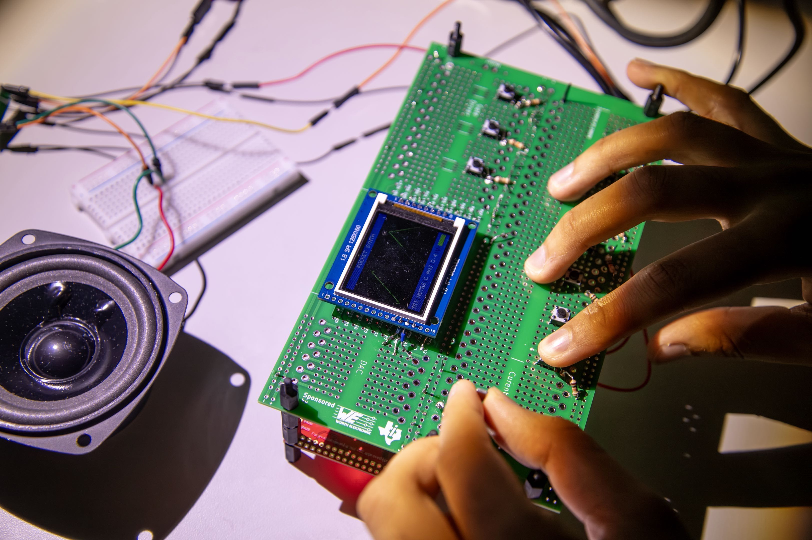
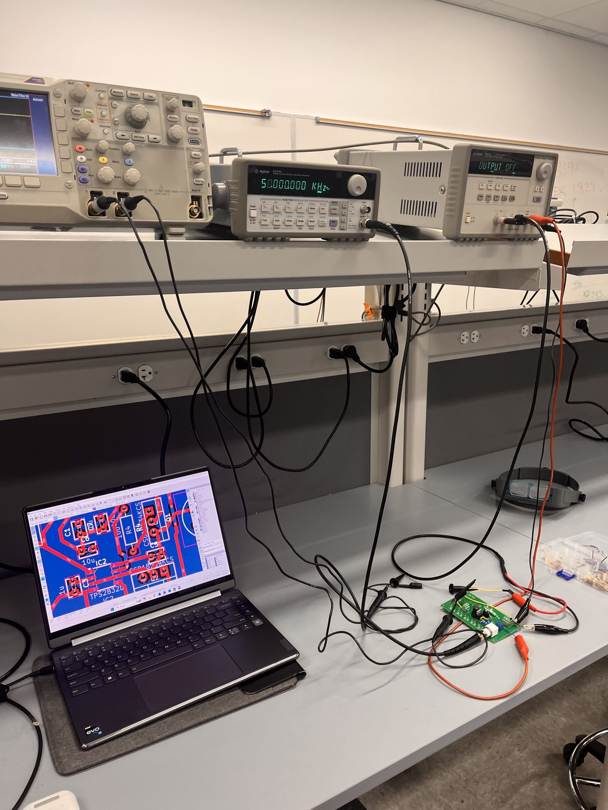

Portfolio / 2026
There's nothing more interesting than the world around us.
I use the tools I learn to understand it a little better.


01 / About me
The world is full of so many things waiting to be explored.
I know it might be trite, but my curiosity has always led me to dive down some of the deepest rabbit holes. The neverending nature of curiosity is so exciting, and it's what motivates me to continually build.
Let’s work together

02 / First model
Before I knew the language for it, I was already modeling the world.
In eighth grade, I built a physics simulation for bouncing balls: gravity, momentum, friction, energy loss. It was a small attempt to understand why things move the way they do—I had just learned F=ma and it truly amazed me I was able to simulate the laws of nature in 100 lines of code.
It was the first time I felt the particular thrill of turning a question into a system I could touch and experiment with. Whether I’m walking to class, standing on a sidewalk, or sitting in a park, I’m drawn to the complexity hiding in plain sight—and to the possibility of making that complexity a little more legible.
03 / A different scale
Then I wanted to understand the machine doing the thinking.
Diving down that rabbit hole, when I learned the beautifully simple differential equations behind heat diffusion, I used parallel computing to simulate it. I built a heat simulation with CUDA to learn how GPUs model a changing world in parallel. That project opened another question: how does the hardware itself make all of this possible?
Now I want to go deeper into high performance computing and computer architecture—how we teach silicon to think, and how much further we can take an idea when we understand the machine beneath it.

04 / Right now
Now, what am I up to?
It may seem like we know everything, but I love that we don't. Computing is still evolving, and every new architecture, accelerator, and manufacturing breakthrough opens another set of questions. I started with something as simple as wondering why my computer crashed while playing Minecraft. Since then, I have kept asking what lies underneath each layer of computation. Now, I want to really understand how we can take the laws of physics, turn them into transistors, turn those transistors into logic, and ultimately turn a piece of silicon into a machine capable of computation - a machine only made possible through generations of human curiosity.
05 / Selected work